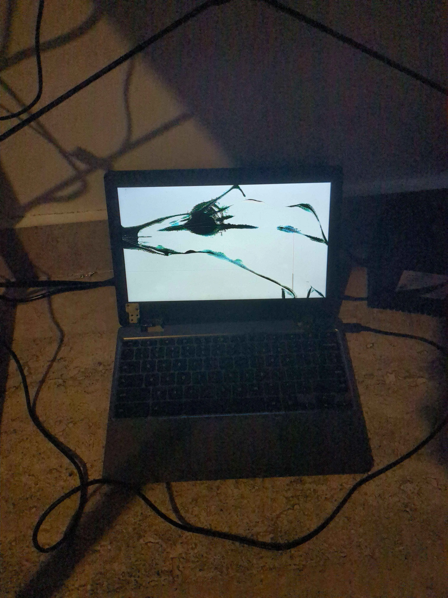

Explicacion
ok, si es que leiste mis apunntes es muy probable que sigas confundido. Deja te explico con mas calma por este medio a que me refiero en cada apartado

Entonces... Linux!.
Hablemos de linux, o mejor dicho de la genuina odisea de meter linux a una Crhomebook administrada por una escuela con una pantalla rota y uno de sus puertos usb no funciona donde cabe resaltar no tenia ninguna experiencia en "reparar computadoras" o como diria alguien normal "hackear"

"¿y que tanto es dificil? ¿no es solo meter un par de comandos en el modo desarrollador?"
No... el modo dev esta bloqueado....
A ESO SUMALE LA PANTALLA ROTA... es que creo que no dimencionan la magnitud de esto... porque lo que pasa es que la Crhomebook de por si no tiene puerto HDMI y el modo de restauracion no (suele) mostrarse en la pantalla HDMI cuando la conectas con un adaptador, ademas las Crhomebook suelen tener una proteccion en contra de ser modificadas ubicadas en no me acuerdo que de la bateria que detecta cambios repentinos de voltaje y en el chip TPM que esta hecho para basicamente ser un policia lo que lo hace que practicamente hablando debas matar la computadora (primera vez que debes matar la computadora, te reto a contarlo) desconectando la bateria y que solo pueda funcionar al conectarse a la corriente y a eso sumale que ademas necesitas una pantalla HDMI (en mi caso, que si tu compu esta buena no lo necesitas, cojones) lo cual necesita un adaptador pero no puedes conectar el adaptador y conectar a la corriente la Crhomebook al mismo tiempo entonces terminas invirtiendo demasiado mas en adaptadores que en todos los demas materiales...
Para penetrar las defensas del enemigo no debes enfocarte en buscar una grieta en la muralla, o en otras palabras, busca lo debil, no te enfoques en lo fuerte, busca lo debil y ataca
¿Cual es el punto debil en este caso?
Bueeeeeeeeeeeeeeeeno, hubiera sido hermoso sentarme aqui como un ganador a poder decirte que logre liberar esta computadora (aun si tecnicamente saltarme de esa manera los terminos de administacion y uso de una empresa/institucion era ilegal) pero lamentablemente no soy el heroe que me gustaria decirte que soy, esta es la historia de un perdedor, que tal y como el gallo. teniendo las patas en la mierda, el gallo CANTA.
eso si, no canta con mucha fuerza porque no se si te estare dando informacion correcta xD. Asi que aqui tienes mis notas por si decides continuar lo que empeze:
Descargar Info de la Chromeok, si es que leiste mis apunntes es muy probable que sigas confundido. Deja te explico con mas calma por este medio a que me refiero en cada apartado